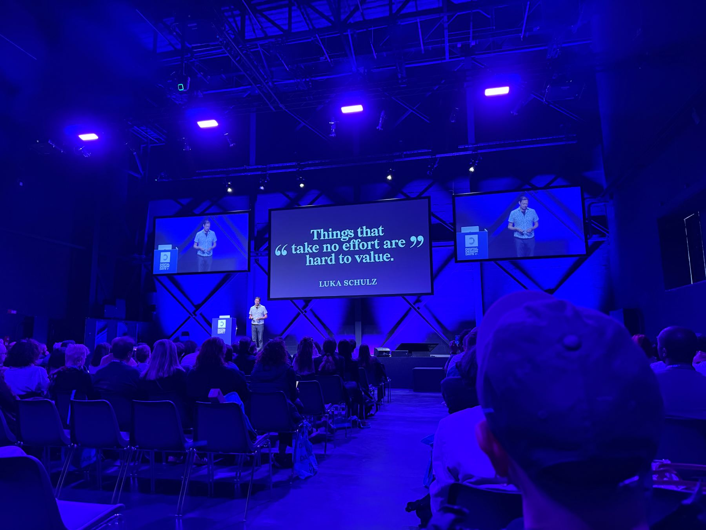

01 / 05
Robert
Hodgin Rare Volume
Hodgin Rare Volume
Day 01 · Art After AutomationTag 01 · Art After Automation
The most emotionally honest account of what AI actually feels like for a working artist.Die emotional ehrlichste Schilderung dessen, wie sich KI tatsächlich anfühlt für einen arbeitenden Künstler.
- Nearly four decades of generative art — Hodgin's career arc gave the talk weight no younger speaker could match.Fast vier Jahrzehnte generative Kunst — Hodgins Werdegang verlieh dem Talk ein Gewicht, das kein jüngerer Speaker erreichen konnte.
- Built the DDD Vault installation: ten years of talks, 1.2M+ words, navigable in 3D — a love letter to the archive.Hat die DDD-Vault-Installation gebaut: zehn Jahre Talks, 1,2 Mio.+ Wörter, navigierbar in 3D — ein Liebesbrief an das Archiv.
- The still-life project: a Midjourney image that would have taken years to build in Houdini — beautiful, instant, completely hollow. If the process disappears, how do we ever get better?Das Stillleben-Projekt: ein Midjourney-Bild, das in Houdini Jahre gebraucht hätte — schön, sofort verfügbar, völlig hohl. Wenn der Prozess verschwindet, wie werden wir je besser?
"I know that I could skip all the suffering and get right to the dopamine hit. And now that I've made it, it just feels so disposable. It doesn't feel like it's mine."
— Robert Hodgin